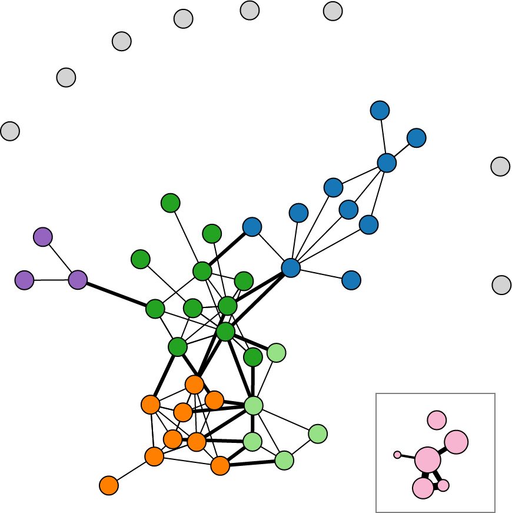
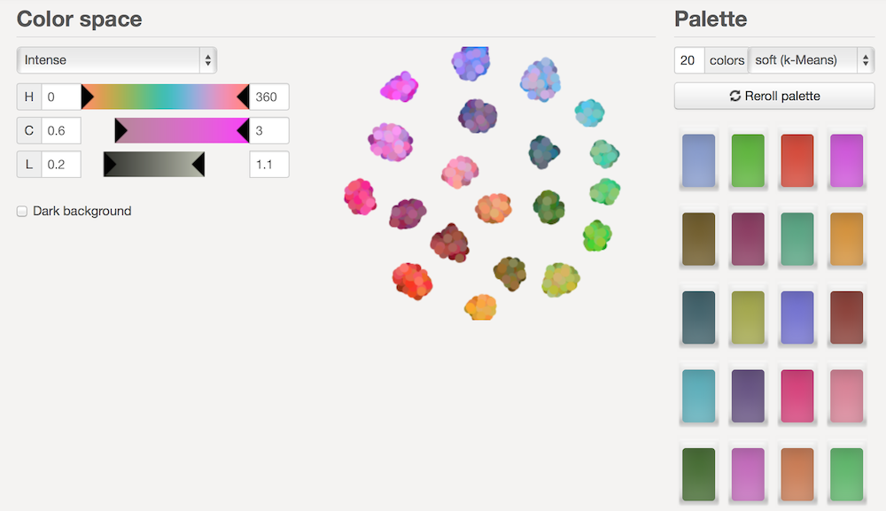
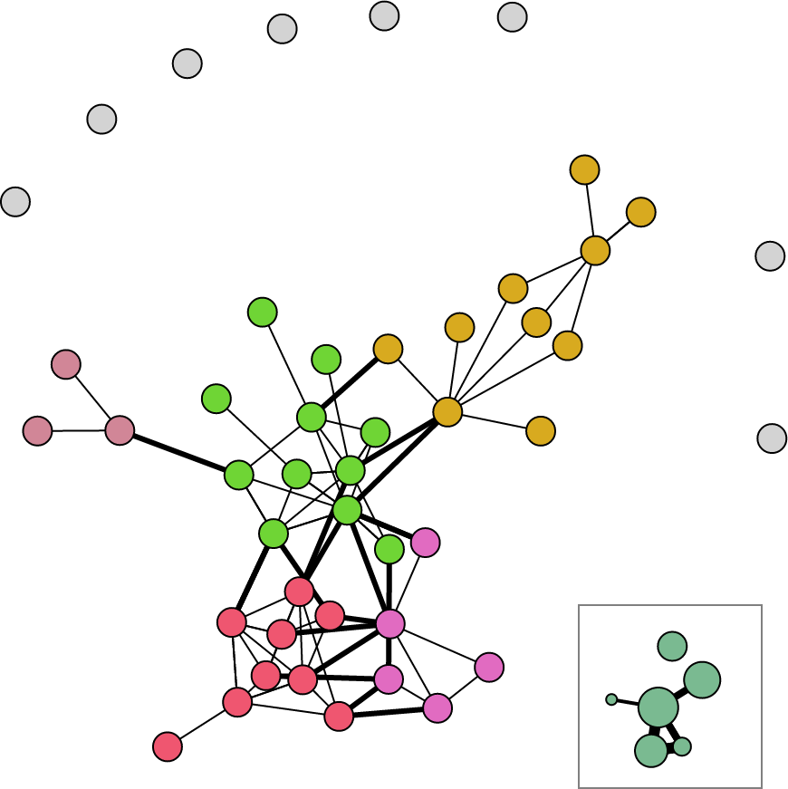

From the original site / 2015-08-02
This archived piece preserves its original text and historical context.
God Help Me, I Hate d3.scale.category20
D3.js has done so much to advance the practice and theory of data visualization. Without much effort you can find examples of visualizations of algorithms, time, mechanical principles, gender discrimination, and yes, even the army of a not-actually-quite-so-small Frenchman moving through Russia.
As much good as it's done, D3.js has also allowed an unruly mob of amateurs the ability to create really bad data visualization. I know, I'm one of them. My very first uses of D3 were misleading and silly when not nearly illegal uses of data visualization. I can't condemn that, and in fact I think it's the best way not only to learn D3 but for interlopers and outsiders to push the boundaries of the field and find new methods for the visual display of information.
But in one area D3 has acted as an anti-catalyst as sure as the worst caricatures of a medieval orthodoxy.
That's right, I'm talking about the use of color. Look at this amazing gallery of examples of data visualization using D3. How many times do you see the following three colors:
Granted, it's not the only color you see, often you'll still see CSS "blue", "red" and "black". And this isn't just in D3--the Tableau palette is right up there on the list of color schemes to make your chart look like every other data visualization product ever made.
I know why we do this. The field of data visualization is replete with warnings that Color is Hard. But color is powerful. If you don't feel capable of selecting a color scheme based on the fundamental principles of how humans perceive color, then what makes you think you can select between a hive plot and a Gannt Chart?
Here are some ways to get started:
- Avoid default color schemes. At the very least, use d3.scale.category20b or, better, use a colorbrewer scale.
- If you're using color to distinguish between less than 10 or 20 categories of data, don't use a 10-category or 20-category scale.
- Stop using CSS primary colors. Not because there's anything inherently wrong with "red" or "blue" but because it's a sign that you're probably not thinking about it. You should be thinking about the color of your elements, it shouldn't be an offhand thing you assign arbitrarily.
- Make sure your palettes are made up of the same kind of colors, like pastels or high-key colors. Don't know what that means? Go read up on color palettes and find out, because color is important and you can't consider yourself a qualified data visualization practitioner if one of the main channels you're using for conveying information is something you don't know about.
- Be aware of what color-blindness is and try to use colorblind safe colors.
- Don't use interpolated color ranges to indicate quantity. Color ramps are horrible for quantity. Learn to bucket your quantities using d3.scale.quantize and d3.scale.quantile so you can use graduated color ramps (roll your own or use a colorbrewer ramp like .reds or .greens).
This post is a more general critique of the lack of thoughtfulness around color in data visualization, but its title and strongest criticism relates specifically to the standard approach to color in D3.js. So how would you go about integrating a more thoughtful approach to color with D3? It's easy. Remember that d3.scale.category20() is a scale, and in particular it's an ordinal scale. It takes in a value (set in the .domain()) and returns one of those twenty horribly overused colors. So any time you see something like:
var colors = d3.scale.category20();

Just replace it with your own ordinal scale where your range is an array of colors you picked out. Where would you get such an array? You could buy a copy of Color Index 2 by Krause and pick out a palette that you feel best suits the mood of the piece you're working on. Or, if that's too much, you could use Tristen Brown's Color Picker based on the Chroma.js library to pick a ramp with the necessary stops. Or, if even that is still too much authorship, you could rely on the clustering algorithms over at i want hue to pick distinct colors for you (even giving the option of creating human unreadable 30 or 50-color combinations).

Either way you do it, you'll finally end up with an array of colors such as: ["#A07A19", "#AC30C0", "#EB9A72", "#BA86F5", "#EA22A8"]. At that point, simply use that array as your range in your ordinal scale:
var colors = d3.scale.ordinal.range(["#A07A19", "#AC30C0", "#EB9A72", "#BA86F5", "#EA22A8"]);
You can use it the exact same way you were using your original scale, and receive in return more distinctive color for the same data visualization product.

Is that the right color scheme for that network? That's not easy to answer--it's about as easy to answer as the question of whether a network is the right chart for that dataset. But the right color scheme isn't the point, because there is no single right color for all your charts. Rather, think about color in your data visualization. Take it seriously. Think about if you're trying to signal success or a warning and what kind of color you feel best conveys that. Don't just grab a color palette because it's the default--you'd never do that with a chart or a dataset, would you?